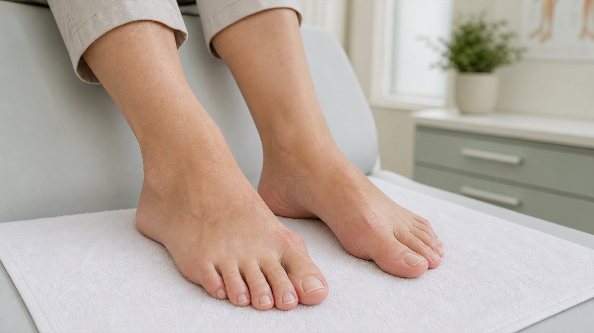
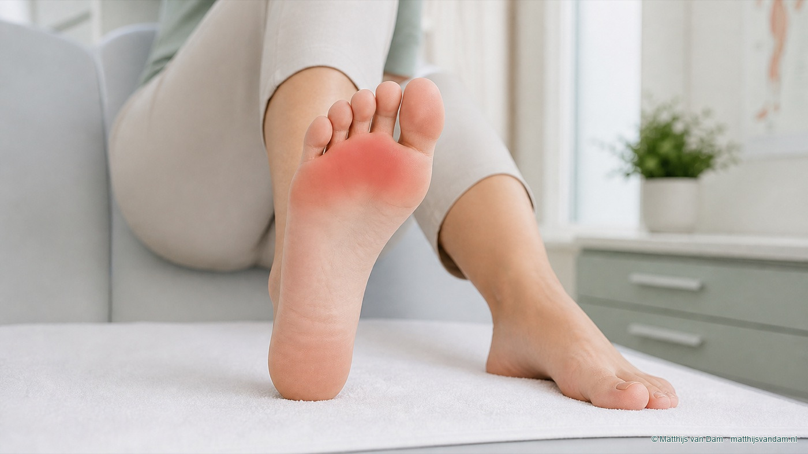
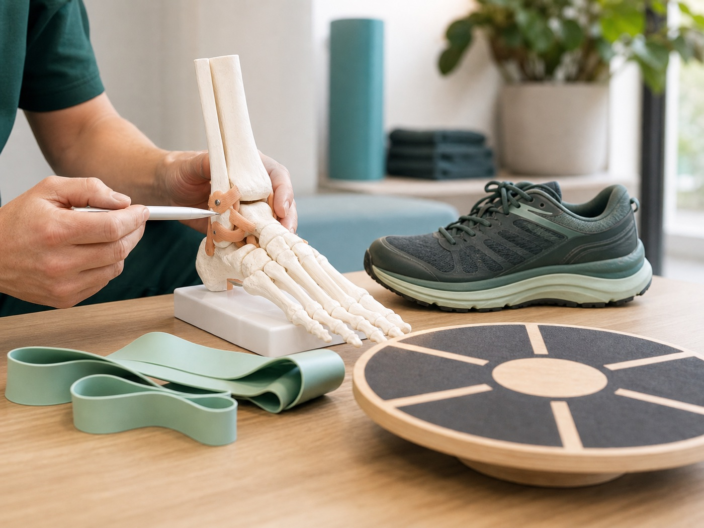
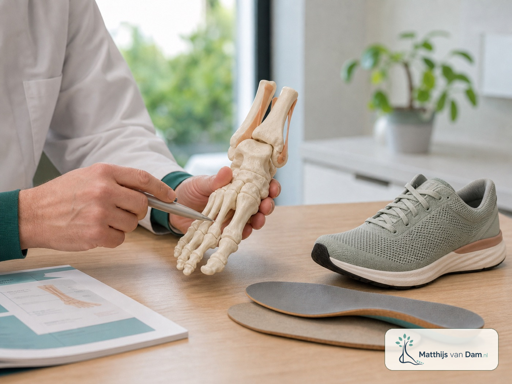
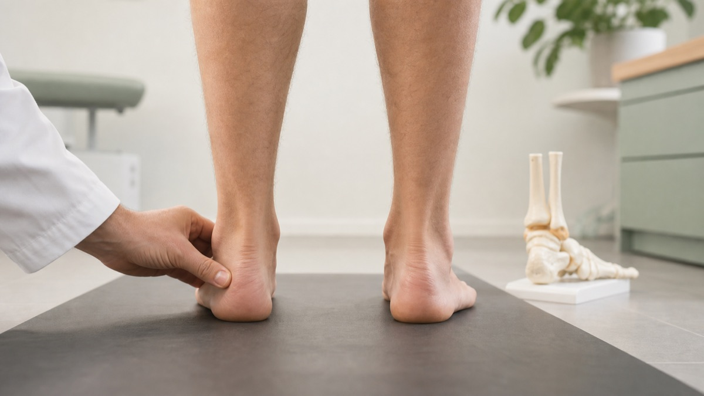
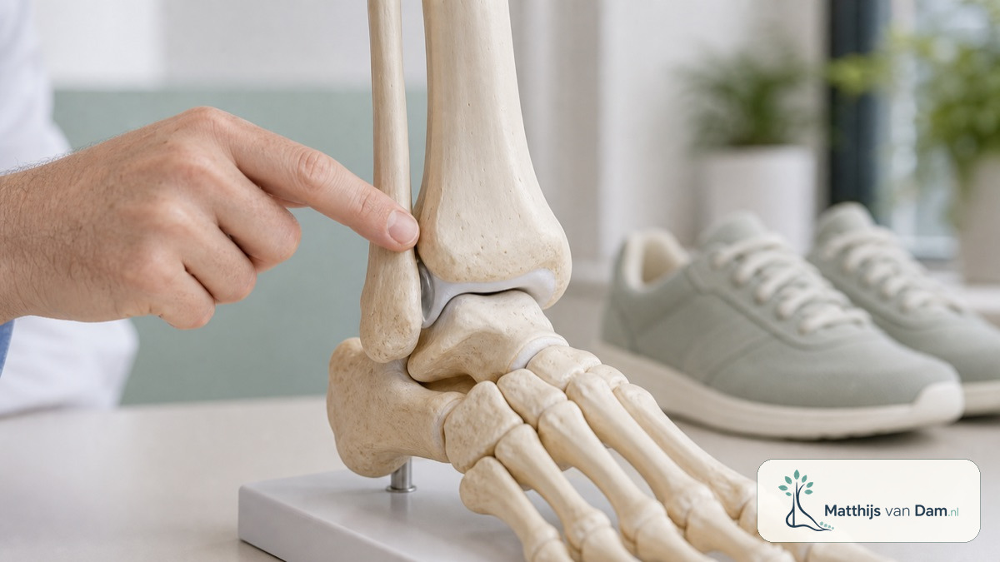
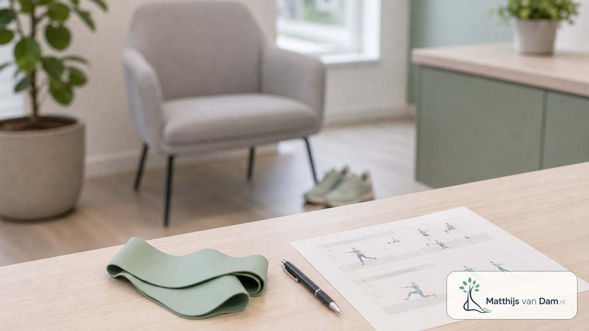
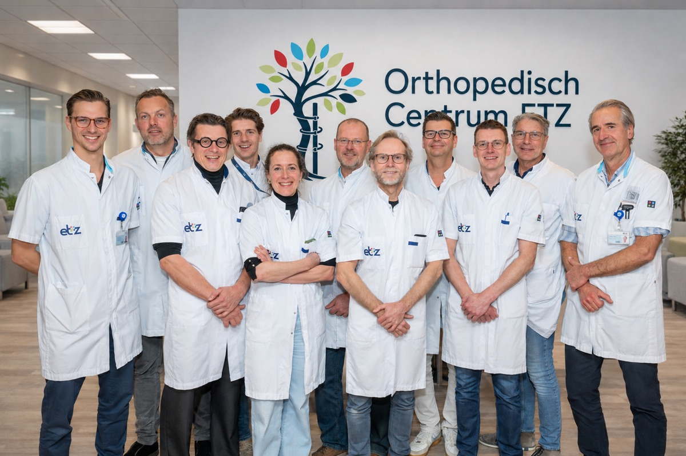
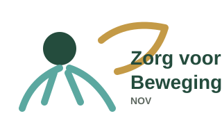

Aandoening
Hallux valgus
Scheefstand van de grote teen met pijn, druk of schoenproblemen. Beoordeling hangt af van klachten, stand, huiddruk en eerdere maatregelen.
Lees algemene uitlegdrs. Matthijs van Dam is orthopedisch chirurg in het Orthopedisch Centrum ETZ in Tilburg. Zijn aandachtsgebieden liggen bij voet-, enkel- en kniechirurgie, sportletsel en leefstijlgerelateerde gewrichtsklachten, waaronder artrose bij obesitas. Daarnaast draait hij mee in de algemene orthopedische avond-, nacht- en weekenddiensten. Daarbij hoort ook acute orthopedische zorg, zoals de beoordeling van letsels en zorg voor mensen met bijvoorbeeld een heupfractuur.
Op deze pagina vind je algemene uitleg over klachten, aandoeningen, letsels en behandelopties. Een pijnplek of klacht is geen diagnose. De keuze voor niet-operatieve zorg, verwijzing of een eventuele operatie hangt altijd af van jouw situatie, onderzoek en wat eerder al is geprobeerd.
Voet en enkel
Deze onderwerpen helpen om algemene uitleg te vinden. Ze zijn geen diagnose en sluiten andere oorzaken niet uit.

Aandoening
Scheefstand van de grote teen met pijn, druk of schoenproblemen. Beoordeling hangt af van klachten, stand, huiddruk en eerdere maatregelen.
Lees algemene uitlegAandoening
Artrose en stijfheid van het grote-teengewricht, vaak met pijn bij afwikkelen of moeite met schoenen.
Lees algemene uitleg
Aandoening
Aanvalsgewijze pijn, roodheid en zwelling rond de grote teen kunnen bij jicht passen, maar vragen altijd medische context.
Lees algemene uitlegAandoening
Teenstandafwijkingen kunnen druk, eelt, wondjes of schoenproblemen geven. De oorzaak en flexibiliteit van de teen zijn belangrijk.
Lees algemene uitlegKlachtbeeld
Pijn onder de bal van de voet is een beschrijving van een klachtgebied, geen sluitende diagnose.
Lees algemene uitlegAandoening
Zenuwirritatie tussen de middenvoetsbeentjes kan brandende pijn, tintelingen of uitstraling naar de tenen geven.
Lees algemene uitlegKlachtbeeld
Pijn rond de basis van de tenen kan passen bij irritatie, overbelasting of instabiliteit rond het MTP-gewricht.
Lees algemene uitlegAandoening
Pijn of druk aan de buitenzijde van de voorvoet bij het vijfde middenvoetsbeentje of de kleine teen.
Lees algemene uitlegKlachtbeeld
Pijn onder het grote-teengewricht kan uit de sesambeentjes of omliggende structuren komen.
Lees algemene uitleg
Letsel
Na een verzwikking kunnen pijn, zwelling en onzekerheid blijven bestaan. Ernst en herstel verschillen per situatie.
Lees algemene uitlegAandoening
Blijvend doorzwikken of onzekerheid na bandletsel vraagt onderscheid tussen kracht, coördinatie, stand en mechanische stabiliteit.
Lees algemene uitlegAandoening
Inklemmingsklachten aan de voorzijde van de enkel kunnen pijn geven bij buigen, sport of hurken.
Lees algemene uitlegAandoening
Pijn achter in de enkel kan optreden bij spitsstand, diepe buiging, dans of sportbelasting.
Lees algemene uitlegAandoening
Een zwelling rond de enkel kan bij een ganglion passen, maar andere oorzaken moeten worden meegewogen.
Lees algemene uitlegKlachtbeeld
Pijn of zwelling aan de buitenzijde van de enkel kan samenhangen met de peroneuspezen.
Lees algemene uitlegKlachtbeeld
Pijn voor of onder de buitenenkel kan uit de subtalaire regio komen, vooral na verzwikken of bij standproblemen.
Lees algemene uitlegAandoening
Een extra botje achter de enkel is vaak een toevalsbevinding, maar kan bij passende klachten onderdeel zijn van de beoordeling.
Lees algemene uitlegAandoening
Slijtage van het enkelgewricht kan pijn, stijfheid en beperking geven, vaak na eerder letsel of standproblemen.
Lees algemene uitlegLetsel
Kraakbeen-botletsel kan diepe pijn, zwelling na belasting, haperen of slotklachten geven.
Lees algemene uitlegAandoening
Een los fragment in de enkel kan passen bij haperen of blokkeren, maar scanbevindingen moeten bij het verhaal passen.
Lees algemene uitleg
Aandoening
Een verzakkende voetstand kan pijn aan de binnenzijde van de voet of enkel en soms buitenzijde-inklemming geven.
Lees algemene uitlegKlachtbeeld
Pijn achter de binnenenkel of langs de voetboog kan samenhangen met de tibialis posterior-pees.
Lees algemene uitlegAandoening
Een hoge voetboog of naar buiten kantelende hiel kan druk, pijn aan de buitenzijde en enkelinstabiliteit geven.
Lees algemene uitleg
Klachtbeeld
Achillespeesklachten kunnen midden in de pees of bij de aanhechting op de hiel zitten.
Lees algemene uitlegKlachtregio
Hielpijn is een klachtregio: pijn onder de hiel, achter de hiel en diep achter in de enkel kunnen verschillende oorzaken hebben.
Lees algemene uitlegKlachtbeeld
Startpijn onder de hiel kan bij peesplaatklachten passen. Een hielspoor op een foto is niet automatisch de pijnbron.
Lees algemene uitlegKlachtbeeld
Centrale drukpijn onder de hiel kan samenhangen met het vetkussen en de demping onder de hiel.
Lees algemene uitlegKlachtbeeld
Pijn achter op de hiel kan komen door schoendruk, slijmbeursirritatie, botvorm of de Achillesaanhechting.
Lees algemene uitlegAandoening
Een harde benige verdikking bovenop de wreef of middenvoet kan druk- of schoenklachten geven.
Lees algemene uitlegAandoening
Een weke of wisselende zwelling bovenop de wreef kan bij een ganglion passen, maar niet iedere bult is een ganglion.
Lees algemene uitleg
Letsel
Botstress in voet of enkel kan geleidelijk toenemende pijn bij belasting geven, maar vraagt beoordeling in context.
Lees algemene uitlegLetsel
Middenvoetpijn na verdraaiing, val of ongeval kan onschuldig lijken, maar soms serieuzer letsel verbergen.
Lees algemene uitlegRestklachten na letsel
Na een breuk in voet of enkel kunnen later pijn, stijfheid, standproblemen of artrose ontstaan.
Lees algemene uitleg
Aandoening
Artrose van de knie kan pijn, stijfheid en beperking geven. De plek van knie/leefstijl in deze hub wordt nog apart beoordeeld.
Letsel
Kraakbeenletsel in de knie vraagt onderscheid tussen lokaal letsel, standsproblemen en beginnende artrose. Behandeling hangt af van leeftijd, belasting, beeldvorming en klachten.

Leefstijl
Gewicht kan invloed hebben op pijn, belasting en operatierisico's. Dit vraagt een respectvol gesprek over ondersteuning en timing.
Behandelopties
Deze pagina's zijn geen uitkomst van de pijnwijzer. Ze horen als verdieping bij een aandoening of klachtbeeld wanneer behandeling in de spreekkamer wordt besproken.
Behandeling
Een verzamelnaam voor operatieve correcties bij geselecteerde standsafwijkingen of drukproblemen in de voorvoet.
Lees over deze behandeloptieBehandeling
Verdieping over het vastzetten van het grote-teengewricht, vooral in de context van hallux rigidus.
Lees over deze behandeloptieBehandelroute
Verdieping over beoordeling en mogelijke vervolgstappen wanneer een vastzetoperatie pijn blijft geven of niet goed vastgroeit.
Lees over deze behandelroute
Behandeling
Bij geselecteerd kraakbeenletsel van de knie kan kraakbeentransplantatie onderdeel zijn van de behandelopties.
Behandeling
Vervanging van een door artrose ernstig aangedaan kniegewricht vraagt afweging van pijn, functie, beeldvorming en voorbereiding.
Ondersteuning
Bewegen hoort vaak bij artrosezorg, ook wanneer operatie later nodig wordt. Kracht en conditie kunnen herstel ondersteunen.
Dit overzicht beschrijft vooral de aandachtsgebieden van drs. Matthijs van Dam. Zoek je informatie over een andere orthopedische klacht, bijvoorbeeld heup, schouder of hand/pols? Kijk dan bij het Orthopedisch Centrum ETZ. De orthopedie in het ETZ behandelt een breed spectrum aan klachten van het bewegingsapparaat.
Verwijzing
Niet iedere klacht hoeft direct naar het ziekenhuis. Vaak begint goede zorg bij de huisarts, fysiotherapeut, podotherapeut of een andere behandelaar in de eerste lijn. Als klachten blijven bestaan, als er twijfel is over de diagnose of als een operatieve behandeling mogelijk een rol speelt, kan verwijzing naar de orthopedie passend zijn.
Bij nieuwe of niet-acute klachten is de huisarts vaak het eerste aanspreekpunt. Afhankelijk van de klacht kunnen fysiotherapeut of podotherapeut belangrijk zijn voor onderzoek, oefentherapie, belasting, schoenen of steunzolen.
Wanneer specialistische beoordeling nodig is, kan de huisarts of medisch specialist verwijzen naar het Orthopedisch Centrum ETZ. De polikliniek beoordeelt de verwijzing en plant een afspraak volgens de gebruikelijke ziekenhuisroute. Bij een verwijzing kun je desgewenst een voorkeur doorgeven voor een medisch specialist; beoordeling en planning verlopen via de gebruikelijke ETZ-route.
In het ziekenhuis wordt gekeken naar klachten, lichamelijk onderzoek, beeldvorming, eerdere behandelingen en persoonlijke doelen. Niet-operatieve opties en eventuele operatie worden samen afgewogen.
Goede orthopedische zorg staat niet los van de regio. Samenwerking met huisartsen, fysiotherapeuten, podotherapeuten, leefstijlprofessionals en andere zorgverleners helpt om de juiste zorg op de juiste plek te organiseren: zorg die toegankelijk blijft en zo goed mogelijk past bij wat iemand nodig heeft.

Orthopedisch Centrum ETZ
Het Orthopedisch Centrum ETZ biedt zorg voor het volledige spectrum binnen de orthopedie: klachten en aandoeningen van botten, gewrichten, spieren, pezen en banden. Dat gaat dus breder dan de onderwerpen die op deze website worden uitgelicht.
Binnen de vakgroep Orthopedie is er onder andere zorg voor voet-, enkel-, knie-, heup-, schouder-, hand- en wervelkolomklachten, maar ook voor acute orthopedische problemen, traumazorg en aandoeningen die om bredere ziekenhuisexpertise vragen.
Bij een verwijzing wordt binnen de gebruikelijke ETZ-route gekeken welke beoordeling of specialist past bij de klacht en de informatie die al beschikbaar is. Voor afspraken, verwijzingen, uitslagen en vragen over lopende zorg blijven de officiële ETZ-kanalen leidend.
Verder lezen
Gebruik deze links voor praktische ziekenhuisinformatie, betrouwbare patiëntinformatie en professionele samenwerking. Voor persoonlijke medische vragen blijven de officiële zorgkanalen leidend.

Zorg voor Beweging Patiëntinformatie van de Nederlandse Orthopaedische Vereniging.